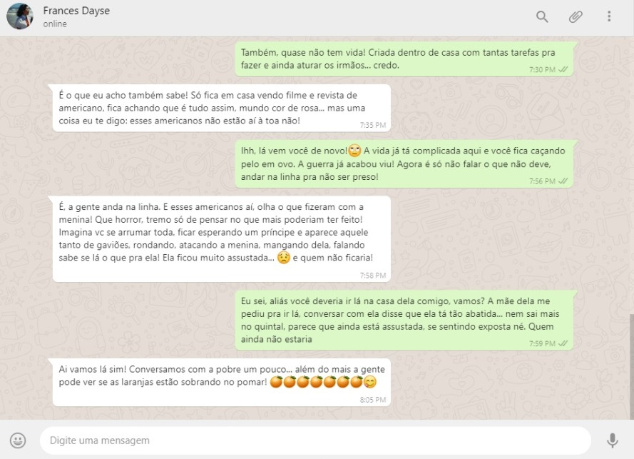

<!DOCTYPE html>
<html>

<head>
    <meta name="viewport" content="width=device-width, initial-scale=1">
    <title>SingStory</title>
    <link rel="shortcut icon" href="Imagens/A/logo_size_invert.jpg" type="image/x-icon" />
    <style>
        * {
            box-sizing: border-box;
        }

        /* Add a gray background color with some padding */
        body {
            font-family: Arial;
            padding: 20px;
            background: #f1f1f1;
        }

        /* Header/Blog Title */
        .header {
            padding: 30px;
            font-size: 40px;
            text-align: center;
            background: radial-gradient(white, #6769cd);
            color: white;
        }

        /* Create two unequal columns that floats next to each other */
        /* Left column */
        .leftcolumn {
            float: left;
            width: 75%;
        }

        /* Right column */
        .rightcolumn {
            float: left;
            width: 25%;
            padding-left: 20px;
        }

        /* Fake image */
        .fakeimg {
            background-color: #aaa;
            width: 50%;
            padding: 20px;
            display: block;
            margin-left: auto;
            margin-right: auto
        }

        /* Fake image */
        .fakeimgLeft {
            background-color: #aaa;
            width: 100%;
            padding: 20px;
        }

        /* Add a card effect for articles */
        .card {
            background-color: #38de56;
            display: block;
            margin-left: auto;
            margin-right: auto;
        }

        /* Clear floats after the columns */
        .row:after {
            display: inline-block;
            margin-left: auto;
            margin-right: auto;
        }

        /* Footer */
        .footer {
            display: block;
            margin-left: auto;
            margin-right: auto;
            height: 90px;
            margin-top: 20px;
        }

        .logo {
            display: block;
            margin-left: auto;
            margin-right: auto;
            margin-top: 10px;
            width: 215px;
        }

        .icones {
            margin-right: 12px;
        }


        /* Responsive layout - when the screen is less than 800px wide, make the two columns stack on top of each other instead of next to each other */
        @media screen and (max-width: 800px) {

            .leftcolumn,
            .rightcolumn {
                width: 100%;
                padding: 0;
            }
        }
    </style>
</head>

<body style="background-color: #38de56;"></body>

<div class="header">
    </a>
</div>

<div>
    
    <span></span>
    
    <span></span>
</div>
<br>
<hr style="height:2px;border-width:0;color:black;background-color:black">
<br>

<div>
    
    <span></span>
    
    <span></span>
    
    <span></span>
</div>

<a href="https://institutosingularidades.edu.br/novoportal/"></a>


</body>

</html>